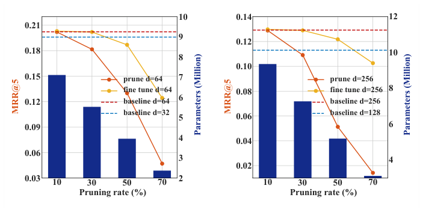
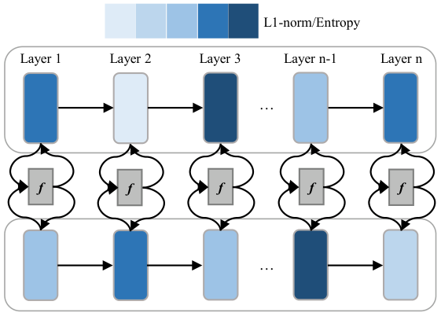

Enhancing Top-N Item Recommendations by Peer Collaboration (基于同伴协作的 Top-N 物品推荐增强)
- 会议/期刊: SIGIR 2022
- 作者与机构: Yang Sun、Fajie Yuan（西湖大学）、Min Yang（中科院深圳先进院 SIAT）、Alexandros Karatzoglou（Google）、Li Shen（京东探索研究院）、Xiaoyan Zhao
- 推荐链路定位: 端到端训练范式（不改变推理链路，召回/排序模型通用）
- 研究方向: 协同过滤与双塔召回 / 序列推荐
- 论文原文: 论文原文链接
- 开源代码: 暂未开源（PCRec 未放码；SASRec 基线实现见 https://github.com/kang205/SASRec）
TL;DR (1分钟核心速览)
现有 DNN 推荐模型普遍过参数化，剪枝实验显示 SASRec 砍掉 10% 权重几乎不掉点、砍 30% 再微调甚至更好——说明大量"无效权重"被浪费。本文提出 PCRec：并行训练两个同构推荐网络（不同学习率与样本打乱顺序），每 epoch 用层重要性（L1-norm / 熵）判定谁的信息更少，并从同伴移植权重予以"复活"。推理只保留单模型，开销与基线完全相同。在 Retailrocket / ML-20M / QQBrowser 三个数据集、BPR / YouTubeDNN / SASRec 三种基座上，MRR@5 相对提升 3.4%–13.0%，且 \(p<0.01\) 显著。
Background & Motivation (背景与核心矛盾)
- 主流范式: 推荐模型依靠超大的 embedding 维度（\(d=256\)）与深层自注意力/Tower 结构提升精度，参数冗余被视为"必要代价"；对应做法是剪枝或蒸馏以压缩模型。
- 前人局限: 其一，剪枝只"丢弃"冗余权重，而推荐模型部署在云端，参数量减少并不能带来推理收益，白扔了容量；其二，从零训练一个小模型（\(d\) 减半）在 ML-20M 上明显掉点，证明小模型无法替代大模型的表达能力。
- 核心洞察 (Key Insight): 两个独立初始化、不同学习率下训练的同伴网络，其"无效层"位置是不同的——一个模型的冗余权重位置，恰好是另一个模型承载有效信息的位置，因此可互补移植而非丢弃。
- 本文切入点: 把剪枝的"重要性度量"从丢弃信号改造为"移植信号"，用同伴的对位权重填补冗余位置，构造一个只训练、不增推理成本的双网络协作范式。

Method (核心方法设计)
1. 整体框架 (Overall Architecture)
PCRec 维护两个结构相同但超参/数据顺序不同的模型 \(M_1,M_2\)。每个 batch 内两模型各自独立前向反传（可用不同学习率\(\eta_1,\eta_2\)、不同 shuffle 的数据\(\mathcal{D}_1,\mathcal{D}_2\)）；每个 epoch 结束时，逐层计算两模型该层的信息量\(H(W_i^k)\)，据此得到融合系数\(\mu_i^k\)，对同层权重做线性组合并把结果写回两个模型，然后继续训练以"重新分化"。收敛后只取单个模型上线，故推理阶段时间复杂度与参数占用与原模型完全一致（并行训练\(TC\)时间 /\(2SC\)空间，串行训练\(2TC\)/\(SC\)）。整个框架与具体打分函数无关，作者用 BPR、YouTubeDNN、SASRec 三种基座实例化。
flowchart TD
A["同一架构的两个模型 M1 / M2<br/>不同学习率 η1,η2 + 不同数据 shuffle"] --> B["逐层信息度量<br/>L1-norm 或 熵 H(W_i)"]
B --> C["自适应系数 μ_i^k = σ(α·ΔH)<br/>层间线性融合 Ŵ_i^k"]
C --> D["权重写回两模型，继续训练分化"]
D --> B
D --> E["推理：仅保留单个模型<br/>（与基线同开销）"]
2. 关键设计拆解 (Key Designs)
-
层重要性双准则（L1-norm 与熵）：剪枝式度量只看权重幅值，若某层权重全为同一大常数 \(z\)，L1 范数很大但对上层变换贡献均等、实为无效信息。为此作者把权重矩阵展平、按等值区间分\(m\) 桶，用分布熵度量层内变异： $\(H(W_i)=-\sum_{k=1}^{m}p_k\log p_k,\qquad \hat{W}_i^k=\mu_i^k W_i^k+(1-\mu_i^k)W_i^{k\%2+1}\)$ 熵越小说明该层信息越贫乏、越需要外部补充；相对信息量亦可用 \(H(W_i^k)=\|W_i^k\|/(\|W_i^k\|+\|W_i^{k\%2+1}\|)\) 的 L1 版本。
-
层粒度自适应线性移植（替代参数粒度硬替换）：参数粒度方案 \(\hat{W}_i^k=W_i^k*(1-I_i^k)+W_i^{k\%2+1}*I_i^k\)（\(|W|<\gamma\) 处被对位替换）会破坏层内协同、割裂一致性。层粒度方案用 sigmoid 包裹信息差构造自适应系数： $\(\mu_i^k=\sigma\!\left(\alpha\left(H(W_i^k)-H(W_i^{k\%2+1})\right)\right)\)$ 信息少的层自动获得更大的同伴权重份额；且因 \(\mu_i^2=1-\mu_i^1\)，融合后\(\hat{W}_i^1\equiv\hat{W}_i^2\)——两模型在该时刻"权重重合"，随后靠不同学习率与不同样本顺序重新分化，这解释了为何 DD（双差异）配置必要。
-
训练目标、负采样与推理效率：总损失即基座模型原损失（BPR 用 pairwise BPR loss + 1 个均匀负样本；SASRec 用 next-item 二元交叉熵 + 每正样本 1 个负样本；YouTubeDNN 用全库 softmax 交叉熵），协作本身不引入额外损失项、不梯度回传，仅做周期性权重写回。推理零额外开销（这是相对 Ensemble / 互学习的关键优势），训练开销约 2 倍。
Experimental Setup & Evaluation Protocol (实验设置与评估协议)
- 数据集与预处理（均做 5-core 过滤，按时间戳排序取最近 \(t\) 次交互构造序列）：
| 数据集 | #Users | #Items | #Interactions | 稀疏度/密度 | 特征/场景说明 |
|---|---|---|---|---|---|
| Retailrocket | 47K | 61K | 0.4M | 极稀疏 | 电商行为，短序列 \(t=10\) |
| QQBrowser | 978K | 70K | 25M | 中等 | 腾讯工业数据（新闻/视频/广告），\(t=50\) |
| ML-20M | 138K | 18K | 20M | 较密 | 电影评分视为隐式反馈，\(t=100\) |
- 数据划分与防穿越:
Leave-One-Out—— 每用户最后 1 次交互为测试、倒数第 2 次为验证，其余训练；序列按时间戳排序，超长序列在训练集内切分为长度 \(t\) 的子序列，不足则前补零。 - 排名评测协议: 沿用 SASRec 等前作脚本，report MRR@5/20 与 HIT@5/20；论文未显式说明候选集构造，按所引 SASRec 官方实现惯例应为"1 正 + 100 均匀采样负"的 Sampled Ranking，故表中数值不宜与 Full-Ranking 结果横向比较（此为本笔记对协议透明度的质疑点）。
- 对比基线与超参设置: 三类基座各做 "原模型 vs. PC 版" 自身对照（BPR / YouTubeDNN / SASRec），\(d\in\{16,...,256\}\)（SASRec、DNN、BPR 多为 256，Retailrocket 上 SASRec/DNN 取 64 防过拟合），学习率\(\eta\in\{1\text{e-}4,1\text{e-}3\}\)，batch 128（BPR 2048），SASRec 用 2 层单头自注意力；PCRec 除\(\eta\)（一个同伴用次优学习率）与\(\alpha\in[10,50]\)外与基座完全同参；提升在\(p<0.01\) 下统计显著。
Key Experimental Results (实验关键数据)
1. 主实验对比 (Main Results)
| 数据集 | 模型 | MRR@5 | MRR@20 | HIT@5 | HIT@20 |
|---|---|---|---|---|---|
| Retailrocket | BPR → PC-BPR | 0.0599 → 0.0650 (8.5%) | 0.0712 → 0.0770 | 0.1091 → 0.1179 | 0.2321 → 0.2420 |
| Retailrocket | DNN → PC-DNN | 0.1648 → 0.1706 (3.5%) | 0.1704 → 0.1777 | 0.2087 → 0.2198 | 0.2628 → 0.2900 (10.4%) |
| Retailrocket | SASRec → PC-SAS | 0.2022 → 0.2091 (3.4%) | 0.2192 → 0.2261 | 0.3169 → 0.3262 | 0.4830 → 0.4921 |
| ML-20M | BPR → PC-BPR | 0.0250 → 0.0274 (9.6%) | 0.0332 → 0.0360 | 0.0483 → 0.0531 | 0.1412 → 0.1530 |
| ML-20M | DNN → PC-DNN | 0.0334 → 0.0364 (9.0%) | 0.0415 → 0.0445 | 0.0628 → 0.0671 | 0.1484 → 0.1531 |
| ML-20M | SASRec → PC-SAS | 0.1292 → 0.1360 (5.3%) | 0.1443 → 0.1513 | 0.2049 → 0.2137 | 0.3593 → 0.3710 |
| QQBrowser | BPR → PC-BPR | 0.0184 → 0.0208 (13.0%) | 0.0239 → 0.0264 | 0.0352 → 0.0392 (11.4%) | 0.0953 → 0.1041 |
| QQBrowser | SASRec → PC-SAS | 0.0185 → 0.0195 (5.4%) | 0.0250 → 0.0264 | 0.0371 → 0.0392 | 0.1055 → 0.1111 |
2. 消融实验 (Ablation Study)
| 变体（Retailrocket / ML-20M，MRR@5 | HIT@5） | DNN 系 | SASRec 系 |
|---|---|---|
| 基座（无协作） | 0.1648 | 0.2087 / 0.0334 | 0.0628 | 0.2022 | 0.3169 / 0.1292 | 0.2049 |
| PC-N（高斯噪声替代移植） | 0.1639 | 0.2053 / 0.0325 | 0.0611 | 0.1994 | 0.3147 / 0.1283 | 0.2034 |
| PC-W（参数粒度硬替换） | 0.1665 | 0.2155 / 0.0351 | 0.0648 | 0.2071 | 0.3207 / 0.1338 | 0.2108 |
| PC-LN（层粒度 + L1-norm） | 0.1686 | 0.2171 / 0.0355 | 0.0659 | 0.2078 | 0.3231 / 0.1343 | 0.2110 |
| PC-LE（层粒度 + 熵） | 0.1706 | 0.2198 / 0.0364 | 0.0671 | 0.2091 | 0.3262 / 0.1360 | 0.2137 |
| Ensemble-M2（两模型打分平均） | 0.1693 | 0.2187 / 0.0355 | 0.0661 | 0.2076 | 0.3236 / 0.1357 | 0.2126 |
| 差异来源（MRR@5） | Retailrocket | ML-20M |
|---|---|---|
| SASRec / DNN | 0.2022 / 0.1648 | 0.1292 / 0.0334 |
| PC-XX-DD（异学习率 + 异采样） | 0.2091 / 0.1706 | 0.1360 / 0.0364 |
| PC-XX-SD（同学习率，异采样） | 0.2059 / 0.1663 | 0.1317 / 0.0338 |
| PC-XX-DS（异学习率，同采样） | 0.2071 / 0.1681 | 0.1341 / 0.0352 |
3. 关键实验发现 (Key Findings)
- 移植的必须是"有效信息"而非扰动：用高斯噪声重生无效权重（PC-N）在所有设置下均劣于基座（ML-20M HIT@5 从 0.2087 掉到 0.2053），而同伴权重移植版一律提升；同时 PC-LE 的 0.1706 略超两模型打分平均的 Ensemble-M2（0.1693），却只需 1 个模型推理——协作是"以训练换推理效率"的集成替代品。
- 层粒度 + 熵准则是最优组合，嵌入层是收益主战场：PC-LE > PC-LN > PC-W 的单调排序（SASRec/ML-20M MRR@5：0.1360 > 0.1343 > 0.1338）证明层内一致性重要；仅在 embedding 层协作（PC-SAS-E）在 ML-20M 上甚至超过全层协作，因为推荐模型绝大多数参数与个性化信息集中在嵌入层，中层注意力协作增益有限。
- 多样性保障与信息复活可被直接观测：DD（异学习率 + 异采样）> DS > SD，说明两种差异都要有；\(\alpha\) 在 30–40 最优，偏离仅损失 1–4%；训练后 SASRec 在 ML-20M 上约 20% 的层为"无效层"（熵阈值 0.5），PC-SAS 仅 <5%，从机制层面证实同伴协作确实抬升了每层的信息量。
Highlights & Limitations (亮点、对比与审稿批判)
- 与代表作对比 (vs. Prior Work): 与剪枝 [Han et al.] 相比，本文不减少参数而是把冗余位"填成有效参数"，动机上更适合云端推荐的算力结构；与知识蒸馏/互学习 [Hinton; Zhang] 相比，无需教师-学生容量差、无额外蒸馏损失、无可解释性差的 dark knowledge；与 Bagging/Stacking 集成相比，推理只跑单模型，避免多模型在线打分的内存与时延膨胀。
- 可迁移亮点: ①"层熵 = 信息量"可作为廉价诊断指标，用于判断某层是否欠训练、是否需要加宽/加正则；②周期性权重交换 + 差异超参（不同学习率、不同采样）是一种几乎零调的通用正则化插件，可直接搬到双塔召回、跨域多场景共享底层等场景。
- 审稿级局限批判: ①由 \(\mu^2=1-\mu^1\)可知每轮融合后两模型权重完全重合，同伴多样性被周期性"清零"，协作强度受限于 epoch 级频率，作者未讨论是否应做部分融合或加噪；②评测协议未交代候选集构造（全库 vs 1:100 采样），指标绝对量级偏低且与 Full-Ranking 不可比；③提升幅度在强基座（SASRec）上仅 3–5%，训练成本翻倍、需要调\(\alpha\) 与双学习率，工业性价比需线上 A/B 才可判定；④"重要性"仅以层熵/范数衡量，缺乏对最终损失的敏感度（如 Fisher/Hessian）视角。
Rating (四维评分)
- 方法创新性 (Novelty): ⭐⭐⭐⭐ （把剪枝信号反转为跨网络"权重移植"，视角新颖且模型无关，但本质仍是权重平均类协作，理论刻画止于熵的经验解释）
- 评估协议与实验扎实度 (Protocol & Experiments): ⭐⭐⭐ （三数据集 × 三基座 × 多指标较完整、\(p<0.01\) 显著，但候选集协议未明示、缺少与 SOTA 序列模型的横向对比及线上验证）
- 写作与数学规范度 (Clarity & Rigor): ⭐⭐⭐⭐ （PW/LW 两方案与两准则定义清晰、算法伪码完整，复杂度分析到位；但 Eq.(2) 与 Eq.(4) 复用符号 \(H\)、融合后权重重合的性质未在正文点明）
- 工业落地与复现价值 (Industrial & Practical Value): ⭐⭐⭐⭐ （推理零开销、可作为插件热插拔到现有 DNN 推荐栈，工程价值明确；扣分在于未开源、训练成本翻倍且 \(\alpha\) 需逐数据集调参）